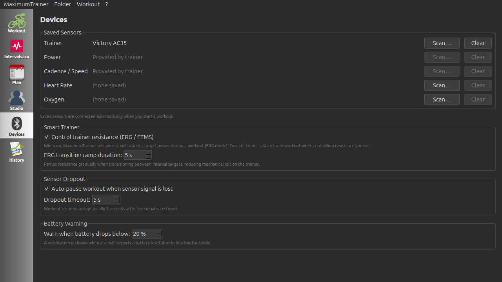
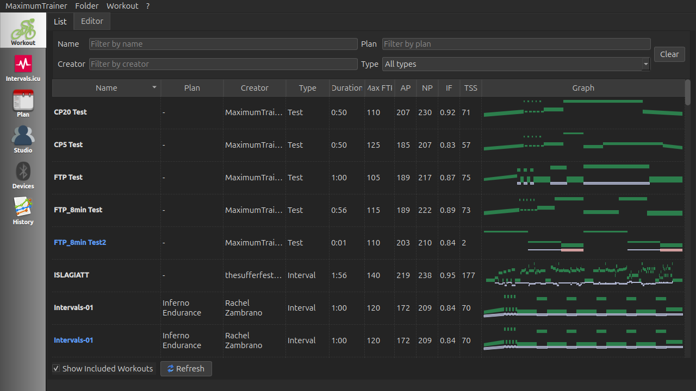
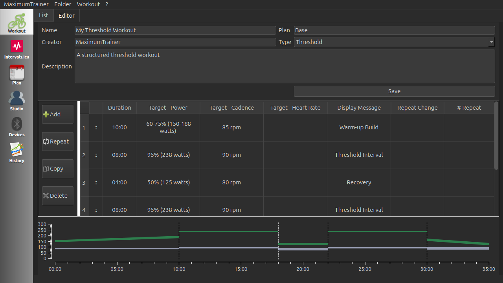
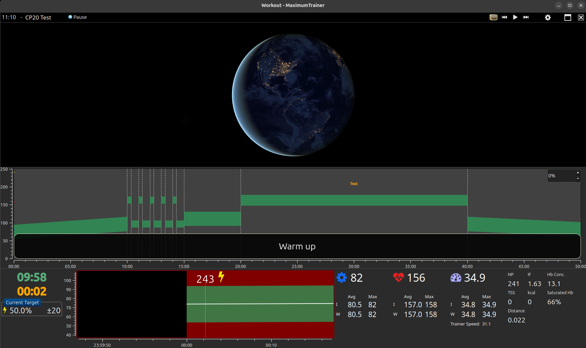
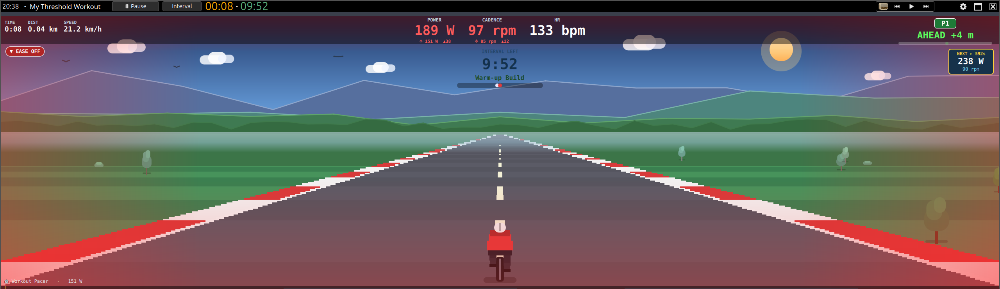
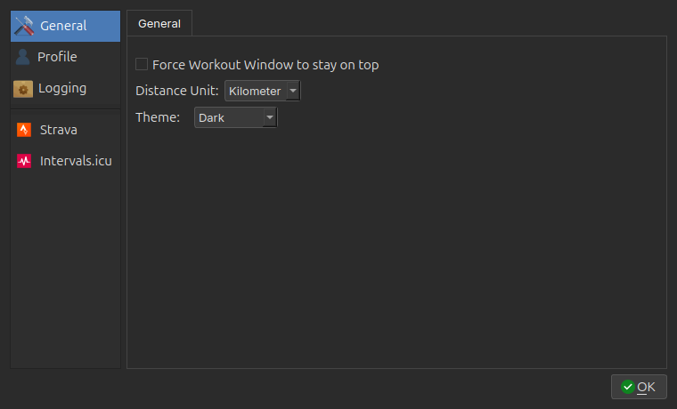
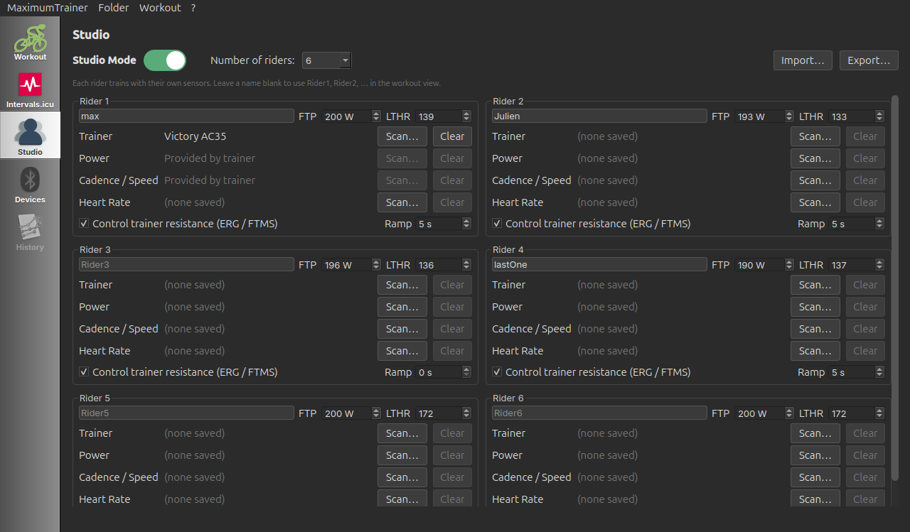

🚴 Overview
Maximum Trainer is a free, open-source indoor cycling and rowing training application. It connects to smart trainers, power meters, heart rate monitors, and cadence sensors over Bluetooth LE (BLE), runs structured interval workouts in automatic ERG mode, and exports completed activities to the Garmin FIT format for upload to Strava and Intervals.icu.
BLE Sensors
Heart rate, power, cadence, speed, and muscle oxygen via standard BLE profiles.
ERG Mode
Automatic resistance control — just pedal at the right cadence and hit your target power.
Workout Library
Sync structured workouts from Intervals.icu, plus import your own .erg / .mrc / .zwo files.
Activity Upload
Post-workout upload to Strava and Intervals.icu — directly from the app.
This guide assumes Maximum Trainer is already installed on your computer. If you need installation instructions, see the README on GitHub.
🚀 First Launch & Login
On first launch, Maximum Trainer displays a login screen. You can sign in with your Intervals.icu account, or choose Offline Mode to train without an internet connection.
Option A — Sign in with Intervals.icu (recommended)
- Launch MaximumTrainer from your Start Menu, Applications folder, or desktop shortcut.
- On the login screen, click Sign in with Intervals.icu.
- Your web browser opens the Intervals.icu sign-in page — log in (email, Google, or Apple) and click Authorise.
- Return to MaximumTrainer — the Main Window opens, ready to use.
Option B — Offline Mode
- Launch MaximumTrainer.
- On the login screen, click Work Offline.
- The Main Window opens. All core features — ERG control, sensor recording, and workout playback from your local library — work without an internet connection. Intervals.icu calendar sync and cloud upload are not available in offline mode.
👤 User Profile & FTP
Maximum Trainer uses your Functional Threshold Power (FTP) and body weight to calculate training zones and relative power (W/kg). Setting these values correctly ensures ERG targets and zone boundaries are accurate.
- Open Preferences from the menu bar (or Ctrl+,).
- Select the Profile category.
- Enter your FTP (watts), LTHR (lactate-threshold heart rate, bpm), and weight (kg).
- Click OK.
Don't know your FTP?
Use the built-in FTP test: pick one of the FTP test workouts from your library and ride it. When it finishes, Maximum Trainer calculates your result and updates your profile. (Until you've tested, 200 W is a reasonable placeholder.)
📡 Connecting Your Devices
Maximum Trainer communicates with cycling hardware over Bluetooth Low Energy (BLE). Before connecting, make sure your devices are awake and within range (typically 10 m).
Waking up your devices
| Device | How to wake it |
|---|---|
| Smart trainer | Start pedalling for a few seconds |
| Power meter | Start pedalling |
| Heart rate strap | Moisten the electrode contacts and put it on |
| Speed / cadence sensor | Spin the crank or wheel |
| Moxy muscle-oxygen sensor | Press the activation button or begin exercise |
Pairing sensors in the app
Sensors are paired on the Devices tab in the left sidebar of the main window. It has one slot per sensor role — Trainer, Power, Cadence / Speed, Heart Rate, and Muscle Oxygen — and you assign one device to each role.

- Wake the sensor you want to pair (see the table above).
- On the Devices tab, click Scan… next to that role. A scanner lists the nearby Bluetooth LE devices.
- Pick your device — it's assigned to that slot right away. To swap or remove it later, click Clear.
- For a smart trainer, tick Control trainer resistance (ERG / FTMS) in the Smart Trainer section to enable automatic ERG resistance.
Saved sensors connect automatically when you start a workout — a green indicator confirms each one is active — so you don't need to re-pair them each session.
The app matches each role to the right Bluetooth LE service automatically:
| Sensor role | BLE service | Data provided | ERG control |
|---|---|---|---|
| Trainer (FTMS) | 0x1826 |
Speed · Cadence · Power | ✅ Yes — automatic resistance |
| Cycling Power | 0x1818 |
Power (W) · L/R Balance | ❌ No |
| Heart Rate Monitor | 0x180D |
Heart rate (bpm) | ❌ No |
| Cycling Speed & Cadence | 0x1816 |
Speed (km/h) · Cadence (rpm) | ❌ No |
| Moxy Muscle Oxygen | 0xAAB0 |
SmO₂ (%) · tHb (g/dL) | ❌ No |
🎮 Simulation Mode
If you have no Bluetooth hardware available — or simply want to preview a new workout — choose Simulation in the connection dialog. The built-in simulator generates realistic, gently drifting sensor values and responds to ERG load commands, giving you a full end-to-end test of the training logic without any physical devices.
- When the connection method dialog appears, select Simulation instead of BTLE Device.
- Choose a workout and press Start.
- The simulator immediately begins emitting data — no hardware required.
| Channel | Base value | Range |
|---|---|---|
| Heart rate | 140 bpm | 125–165 bpm |
| Cadence | 90 rpm | 80–100 rpm |
| Speed | 28 km/h | 23–33 km/h |
| Power | 200 W | 170–260 W |
🔍 Finding Workouts

Option A — Intervals.icu calendar sync
Maximum Trainer integrates directly with Intervals.icu — the popular free training platform — to pull your scheduled workouts into the app.
- Connect your account: sign in with Intervals.icu on the login screen, or open Preferences → Intervals.icu, paste your API Key and Athlete ID (from intervals.icu → Settings → Developer), and click Test Connection.
- Click the Intervals.icu tab in the left sidebar of the main window.
- Use Refresh (or Sync All This Week) to load your planned workouts for the current week.
- Select a workout and click Load Selected Workout to download it to your local library.
- The workout appears in your library list immediately, ready to start.
Option B — Browse existing library
Previously downloaded workouts are listed in the Workouts tab of the main window. Use the search/filter bar at the top to quickly find a specific session by name, duration, or workout type.
Option C — Included training plans
Maximum Trainer ships with several ready-made training plans. Type a plan name into the Plan filter at the top of the workout list to see its sessions in order (workouts are named week-ride, e.g. "Kickstart 2-1").
| Plan | Length | What it is |
|---|---|---|
| Base Camp | 4 weeks, 3 rides/week | Gentle aerobic base for beginners or riders returning from a break - zone 2, cadence drills and a first taste of tempo, ending ready for the FTP Test. |
| FTP Kickstart | 3 weeks, 3 rides/week | Sweet spot, tempo and over-unders building up to the built-in FTP Test - a fast way to raise (and measure) your FTP. |
| Polarized 3x | Weekly trio, repeat 3-4 weeks | Classic 80/20 polarized week: a long Zone 2 ride, over-unders, and 30/30 VO2max intervals. By Robin Ingelbrecht. |
| VO2 Shock Block | 2 weeks, 3 rides/week | Short high-intensity block - 30/30s, 40/20s and classic 4x4s with easy spins in between - to spike your top-end fitness. |
| Lunch Crunch | 3 weeks, 3 rides/week | Time-crunched training: every ride fits in 30-45 minutes - compact sweet spot, micro-intervals and tempo for busy weeks. |
| Heart Rate Base | 3 weeks, 3 rides/week | Aerobic base guided by heart rate instead of power (targets as % of LTHR, no ERG) - ideal when your FTP is unknown or you prefer training by feel. Requires a heart rate sensor. |
New to structured training? Ride them in this order: Base Camp → FTP Kickstart → VO2 Shock Block, with Polarized 3x as a repeatable maintenance week and Lunch Crunch for weeks when time is short.
📂 Importing Workouts
If you already have workout files from another application (TrainerRoad, Zwift Companion, Intervals.icu, etc.), you can import them directly into Maximum Trainer.
Supported import formats
| Format | Extension | Source applications |
|---|---|---|
| CyclingPeaks / TrainerRoad ERG | .erg | TrainerRoad, custom scripts |
| CyclingPeaks MRC | .mrc | TrainerRoad, PerfPro, various |
Importing a single workout file
- Go to File → Import → Single Workout in the menu bar.
- Navigate to your
.ergor.mrcfile and click Open. - Maximum Trainer converts the file to its native XML format and adds it to your library.
Importing multiple workout files
- Go to File → Import → Multiple Workouts.
- Select one or more
.erg/.mrcfiles. - All selected files are converted and batch-imported at once.
✏️ Creating Custom Workouts
The built-in Workout Creator lets you design your own structured interval sessions — specify target power (as absolute watts or % FTP), cadence, or heart rate for every segment, add repeats, and save for immediate use.

- Open the Editor tab at the top of the main window (next to List).
- Fill in the Name, Type, and optional Plan, Creator, and Description.
-
Build the session in the interval table:
- Add — appends an interval; set its Duration, Target — Power (W or % FTP), Cadence, Heart Rate, and an optional Display Message.
- Repeat — repeats a block of intervals (set the # Repeat count, plus an optional Repeat Change to step the target on each pass).
- Copy / Delete — duplicate or remove the selected interval.
- The graph preview at the bottom updates live as you edit.
- Click Save. The workout is added to your library immediately.
⚙️ ERG vs Slope Mode
Maximum Trainer supports two resistance modes when connected to a smart trainer. Understanding the difference is key to getting the most out of your sessions.
| Mode | How it works | Best for |
|---|---|---|
| ERG | The app continuously adjusts trainer resistance so your actual power output matches the interval target. You only need to control cadence. | Structured interval workouts with power targets |
| Slope / Manual | The app sends a constant simulated incline (grade %) to the trainer. Resistance increases naturally with speed, just like riding a hill outdoors. | Free-riding and outdoor-style efforts |
Virtual shifting (Zwift Cog / single-gear setups)
If your trainer uses a single cog (e.g. a Zwift Cog) instead of a normal cassette, free rides and FTP tests would otherwise leave you with no usable resistance. Enable Virtual shifting on the Bluetooth / Smart Trainer settings page (it is off by default, so normal-cassette setups are unaffected) and the app gives you on-screen gears.
- A gear indicator (▼ N / 24 ▲) appears on the workout top bar.
- Shift with the Up / Down arrow keys or by clicking the on-screen ▲ / ▼ arrows — a harder gear instantly raises resistance, like a real drivetrain.
- During an ERG power interval the indicator dims to ERG (the target power is in control); it becomes active again on free / test intervals.
Zwift Click v2 controller (beta)
You can shift and control the workout with a Zwift Click v2 controller. It connects over its own Bluetooth link (separate from the trainer), so ERG/FTMS is unaffected. Enable Use Zwift Click v2 controller on the Bluetooth / Smart Trainer settings page (off by default).
- Wake both controllers before the workout - press a button on each. The left (-) controller only needs to be connected to keep the pair's link stable; you control everything from the right.
- Only the right (+) controller is mapped: Y = gear up, B = gear down, A / Z = next / previous radio station, + paddle = start / pause the workout.
- The left (-) controller is not supported yet - it currently has a connection-drop issue that will be investigated in a later release. For now it serves only to anchor the link so the right side stays solid.
ERG tips
- Maintain a smooth, consistent cadence (85–95 rpm is typical). Abrupt cadence changes cause the trainer to momentarily over- or under-correct resistance.
- When a new interval starts, give the trainer 5–10 seconds to settle at the new target.
- If a target feels too hard or too easy, use Adjust Difficulty (±5 % FTP per press) to scale the entire session without stopping.
▶️ The Workout Player

The workout player is the central screen during a training session. It combines a real-time power graph, live sensor metrics, interval information, and playback controls all in one view.
Display elements
| Element | Description |
|---|---|
| Interval graph | Coloured target-power band with your live wattage overlaid as a line. Each zone has a distinct colour matching standard training zones. |
| Interval countdown | Time remaining in the current interval, displayed prominently at the top. |
| Workout time | Total elapsed time and total remaining time for the full session. |
| Power | Live power output in watts from your trainer or power meter. |
| Heart rate | Live beats per minute from your HR strap, colour-coded by zone. |
| Cadence | Live pedalling cadence in rpm. |
| Speed | Live speed in km/h. |
| L/R Balance | Left/right power split (%) — only shown when a dual-sided power meter is connected. |
| SmO₂ / tHb | Muscle oxygen saturation and total haemoglobin — only shown when a Moxy sensor is connected. |
| Calories | Estimated kilojoules / kcal burned, calculated from power data. |
🎛️ During a Workout
Starting a workout
- Select a workout in the main window and click Start Workout (or double-click it).
- Choose your connection method: BTLE Device (real hardware) or Simulation.
- The workout player opens and waits at the start line.
- It begins according to your start trigger (below) — by default, as soon as you start pedalling. You can also press Start (or Space / Enter) at any time.
How the workout starts
Choose the trigger in the workout's Settings (the gear icon) under Start workout when:
| Trigger | Starts the workout when… |
|---|---|
| Cadence (default) | your cadence rises above a set value (default 40 rpm) |
| Power | your power rises above a set wattage |
| Speed | your speed rises above a set km/h (or mph) |
| Button press | only when you press Start (or Space / Enter) — no auto-start |
Playback controls
| Control | Action |
|---|---|
| Pause / Resume | Temporarily pauses the workout timer and sets trainer load to 0 W. Press again to resume. |
| Skip / jump interval | Press → to skip to the next interval — or click any block in the interval graph to jump straight to it (the intervals in between are skipped). |
| + Difficulty | Increases all remaining interval targets by 5 % of your FTP (stacks). |
| − Difficulty | Decreases all remaining interval targets by 5 % of your FTP (stacks). |
| Interval | Marks a manual lap / interval boundary in the recorded data (useful for free-ride segments). |
| Exit | Leaves the session — see Saving Your Activity for what happens on a normal finish vs. an early exit. |
Settings during a workout
Press the Settings gear in the workout player to adjust options without interrupting the session: which metric widgets are shown and their style (Minimalist / Detailed / Graph), which timer elements appear, the start trigger, the Multimedia panel, and your Radios.
The media panel
The large panel beside the power graph can show one of three things. Choose which in the workout's Settings (the gear icon) → Multimedia:
| Type | What it shows |
|---|---|
| Standard | A built-in video player (QtMultimedia) for local video files — training footage or virtual rides. Right-click the video area to open a file and adjust volume. (Desktop only.) |
| Web Browser | An embedded browser (QtWebEngine) opened to the Home Page URL you set below the dropdown — handy for YouTube, a live event, or your own dashboard. (Desktop only.) |
| Game (Retro Race · beta) | A pseudo-3D ghost race: your live power drives your rider down a retro course against an opponent — race your previous effort on this workout, or a pacer that follows the target watts. Single-player desktop feature; not available in Studio mode or the browser (WASM) build. |

Radio Player
Internet radio is separate from the panel above and plays on any mode. Its controls sit at the top-right of the workout player; add your own stations in the workout's Settings → Radios (they're saved for next time). You can also play, pause, or skip with the radio shortcuts.
In the browser (WASM) version, if it can't reconnect on its own a Reconnect overlay appears — click it to trigger a new Web Bluetooth scan and re-pair your trainer.
💾 Saving Your Activity
How the session ends — and whether it's saved — depends on whether you finish the workout or leave early.
Finishing the workout normally
When the workout reaches its end, a Workout Complete! panel appears over
the player with your summary and an Upload Activity section (see
Uploading). The activity is written as a .fit file to
your history folder.
Leaving before the end
If you Exit before the workout finishes, Maximum Trainer asks "Workout is not completed — Save your progress?" with three choices:
- Yes — saves the ride so far as a
.fitfile and closes. - No — discards the ride; nothing is written. This cannot be undone.
- Cancel — returns to the workout.
MaximumTrainer / History.
☁️ Uploading to Strava & More
Maximum Trainer can upload completed activities directly to third-party platforms from the post-workout screen — no need to open a web browser or manually transfer files.
Supported platforms
Strava
Authenticate once via your system browser (OAuth). Completed rides upload to your Strava feed — automatically if you enable auto-upload.
Intervals.icu
Sync your planned workouts and optionally auto-upload completed activities once you've signed in with Intervals.icu.
Linking a platform (one-time setup)
- Open Preferences.
- Select the Strava category.
- Click Connect to Strava.
- Your system browser opens for you to authorise Maximum Trainer. Log in, click Authorise, then return to the app.
- Maximum Trainer now shows Strava as linked with a green tick.
Uploading after a workout
On a normal finish, the Workout Complete! panel handles uploads:
- Auto-upload on — the activity uploads on its own and the panel shows the status; nothing to click.
- Auto-upload off — the panel shows an Upload to Strava / Upload to Intervals.icu button; click it to upload the
.fitfile.
Toggle auto-upload per platform in Preferences → Strava and Preferences → Intervals.icu.
⚙️ Settings
Maximum Trainer has two settings dialogs. Preferences (from the menu bar, or Ctrl+,) holds your account-wide options, organised into the categories below. Display options that apply only while you ride live in a separate dialog — see Workout settings further down.

| Category | What you can configure |
|---|---|
| General | Distance unit (km / miles), app theme (System / Light / Dark), and "force the workout window to stay on top" |
| Profile | Your FTP (W), LTHR (bpm), and weight (kg) — used for training zones, W/kg, and ERG targets |
| Logging | Set the minimum log level, enable or disable writing to a log file, choose the log file path, and open the current log file. See Log Files & Troubleshooting for default paths. |
| Strava (integration) | Link / unlink your Strava account and toggle auto-upload of completed activities |
| Intervals.icu (integration) | Your Intervals.icu API key and Athlete ID, a Test Connection button, and auto-upload of completed activities |
Workout settings (in the player)
Options that apply only while you ride live in their own dialog — open it with the Settings gear in the workout player. There you choose which metric widgets are shown (power, HR, cadence, speed, balance, SmO₂), the timer style, the Multimedia panel type (video / web / game), and your Radios.
🏟️ Studio Mode
Studio Mode allows multiple riders to train simultaneously on a single installation — perfect for spinning studios and group training sessions. Each rider has their own BLE device slot and individual metrics display.

Enabling Studio Mode
- Click the Studio tab in the left sidebar of the main window.
- Toggle Studio Mode on.
- Set the number of riders — up to 8, limited by simultaneous BLE connections.
- For each rider, set their name, FTP, and LTHR, scan and assign their sensors, and choose whether ERG/FTMS control is enabled.
- Start a workout — each rider trains with their own sensors and gets their own live metrics panel. You can also Import / Export the whole studio configuration as JSON.
.fit file. Workout targets are scaled per-rider based on
individual FTP values.
🗒️ Log Files & Troubleshooting
Maximum Trainer writes diagnostic messages to a log file whenever file logging is enabled in Preferences → Logging. The log captures all network request errors, BLE connection events, and OAuth login steps, making it the first place to look when something goes wrong.
Enabling the log file
- Open Preferences.
- Select the Logging category.
- Tick Write log to file.
- Optionally change the log file path with the Browse… button.
- Click OK — logging starts immediately.
Use the Open log file button to open the current log in your default text editor at any time.
Default log file locations
| Platform | Default log file path |
|---|---|
| Windows |
%APPDATA%\MaximumTrainer\MaximumTrainer.loge.g. C:\Users\YourName\AppData\Roaming\MaximumTrainer\MaximumTrainer.log
|
| macOS |
~/Library/Application Support/MaximumTrainer/MaximumTrainer.logHold ⌥ Option and click Go in Finder to reveal the hidden Library folder.
|
| Linux |
~/.local/share/MaximumTrainer/MaximumTrainer.logFollows the XDG Base Directory specification. Override with the $XDG_DATA_HOME environment variable.
|
💡 Tips & Shortcuts
Keyboard shortcuts
Press ? at any time during a workout to view the in-app keyboard shortcuts dialog.
Workout Player
| Key | Action |
|---|---|
| Space / Enter | Start / Pause workout |
| → | Skip to next interval |
| ↑ / ↓ | Virtual shift gear up / down (when Virtual shifting is on; otherwise adjusts difficulty) |
| + / = | Increase difficulty +5 % |
| - | Decrease difficulty -5 % |
| L / Backspace | Mark interval (lap) |
| F6 / F7 / F8 | Radio: previous / play-pause / next track |
| F11 | Toggle fullscreen |
| ? / F1 | Show keyboard shortcuts |
| Escape | Exit workout (with confirmation) |
Main Window
| Key | Action |
|---|---|
| Ctrl+, | Open Preferences |
| Ctrl+N | Create new workout |
| Ctrl+Q | Quit application |
| F1 | Show keyboard shortcuts |
Zwift Click (right controller) - when paired (Bluetooth settings).
| Button | Action |
|---|---|
| Y | Gear up (or difficulty in ERG) |
| B | Gear down (or difficulty in ERG) |
| A | Radio: next station |
| Z | Radio: previous station |
| Right paddle (+) | Start / Pause workout |
General tips
- Warm up your trainer before a serious workout. Most direct-drive trainers need 10–15 minutes of easy riding at 100–150 W to reach operating temperature and produce accurate power readings.
- Use simulation mode to preview new workouts and verify that the interval structure is what you expect before committing to the real effort.
- Adjust difficulty on the fly — if a workout is designed at 100 % FTP and you're having a bad day, knock it down by 1–2 presses (−5–10 %) rather than stopping. You'll still get a training benefit and keep the streak alive.
- Set accurate FTP and weight. Incorrect values shift all zone boundaries and make ERG targets too easy or too hard. Run the built-in FTP test when your fitness changes — it updates your profile for you.
- Keep the app up to date. It checks for a newer release automatically at startup and offers the update when one is available. New trainer profiles and BLE improvements are shipped frequently.
Troubleshooting
| Problem | Solution |
|---|---|
| Sensor not appearing in BLE scanner | Wake the device (pedal / moisten HR strap), bring it closer, and click Rescan. |
| ERG resistance not changing | Ensure the trainer is connected with the FTMS (0x1826) profile, not a plain Power profile. A plain Power profile provides data but does not accept load commands. |
| ERG not working in browser (WASM) version | The browser version sends an FTMS Request Control handshake automatically after connection. If ERG commands are still ignored, disconnect and reconnect your trainer — some trainers require a fresh GATT connection to accept the control handshake. |
| Power readings seem inaccurate | Spin-down / calibrate the trainer from its own app, then reconnect in Maximum Trainer. |
| App won't connect after a BLE disconnect | Maximum Trainer pauses and retries automatically. If it can't reconnect, toggle Bluetooth off/on in your OS and use the Reconnect option. |
| Upload to Strava fails | Re-link your Strava account in Preferences → Strava. OAuth tokens expire; re-linking refreshes them. |
🖥️ Platform Requirements
Maximum Trainer is supported on Windows, macOS, and Linux. The BLE requirements differ slightly per operating system.
| Platform | Minimum OS | Notes |
|---|---|---|
| Windows | Windows 10 version 1703 (Creators Update) or later | Requires a Bluetooth 4.0+ adapter with a WDM-compatible driver. Windows 7, 8, and 8.1 are not supported (missing WinRT BLE APIs). No special permissions or manifest entries are needed. |
| Linux | Ubuntu 22.04+ / kernel 5.x+ | Needs a Bluetooth 4.0+ adapter. Works out of the box on a modern desktop (recent Ubuntu, Fedora) — no special setup required. |
| macOS | macOS 10.15 (Catalina) or later | On first connection, macOS will prompt for Bluetooth permission (NSBluetoothAlwaysUsageDescription). Click Allow to grant access. This permission can be reviewed in System Settings → Privacy & Security → Bluetooth. Requires a Mac with built-in Bluetooth or a BT 4.0+ adapter. |
| Browser (WASM) | Chrome 85+ or Edge 85+ |
Requires the
Web Bluetooth API
— available in Chrome and Edge (not Firefox or Safari). The page must be served
over HTTPS. BLE pairing must be triggered by a user gesture (clicking
Start Workout). No local file access; activities cannot be
exported to a local .fit file in the browser version.
|